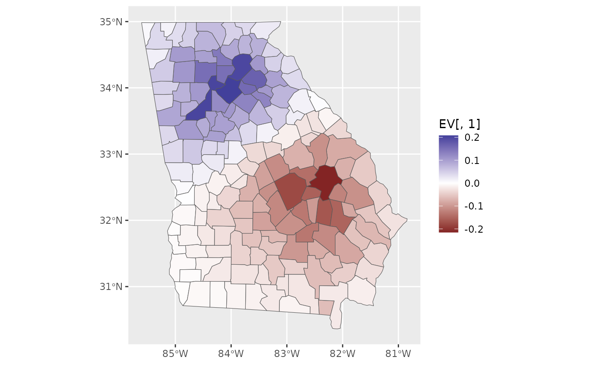

R/convenience-functions.R
make_EV.RdExtract eigenfunctions of a connectivity matrix for spatial filtering
make_EV(C, nsa = FALSE, threshold = 0.2, values = FALSE)
| C | A binary spatial weights matrix. See |
|---|---|
| nsa | Logical. Default of |
| threshold | Defaults to |
| values | Should eigenvalues be returned also? Defaults to |
Daniel Griffith and Yongwan Chun. 2014. "Spatial Autocorrelation and Spatial Filtering." in M. M. Fischer and P. Nijkamp (eds.), Handbook of Regional Science. Springer.
A data.frame of eigenvectors for spatial filtering. If values=TRUE then a named list is returned with elements eigenvectors and eigenvalues.
Returns a set of eigenvectors related to the Moran coefficient (MC), limited to those eigenvectors with |MC| > threshold if nsa = TRUE or MC > threshold if nsa = FALSE, optionally with corresponding eigenvalues.
library(ggplot2) library(sf) data(georgia) C <- shape2mat(georgia, style = "B") EV <- make_EV(C) ggplot(georgia) + geom_sf(aes(fill = EV[,1])) + scale_fill_gradient2()